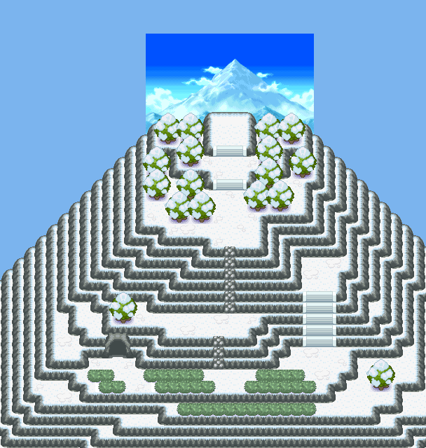

008 山顶的秘密
一句话目标：在擂钵山收尾演出后前往擂钵山山顶（56:42），走到约 (19,17)–(21,17) 的坐标触发点，目送三只宝可梦被时空扭曲卷走。
接取地点
- 擂钵山洞窟（地图 42:0）内 (7,4) 的委托男子（local_id 1）。
- 本任务不是向该男子“领取”，而是在完成『水与火的修罗场』、把木木枭交给他之后的同一段收尾演出里自动接取（旗标 3023）。
准备条件
- 必须先完成『水与火的修罗场』（完成旗标 3022）。该人物只有在任务7流程中才会走到此处。
- 无需额外道具；三只宝可梦（火球鼠/水水獭/木木枭）在剧情里由该男子保管。
操作步骤
- 在擂钵山洞窟 (7,4) 与男子对话并完成『水与火的修罗场』：交出木木枭后，火球鼠与水水獭不再争斗，三只很快玩成一片（“三只宝可梦\n很快玩成了一片！”）。
- 演出继续：三只宝可梦突然起身离去，男子惊呼“难道！？\n它们要跑到山顶上去吗？\n上面很危险！\n那里有强烈的磁场异常啊！\n[玩家]，快！我们得追上它们！”→ 自动“接受任务:<山顶的秘密>”。
- 男子提示“三只宝可梦已经\n朝山顶跑去了。\n赶快去山顶看看吧！”，随后离开；任务目标更新为追上山顶。
- 前往擂钵山山顶（雪山户外区，地图 56:42）。三只宝可梦的立绘对象在约 (19,10)、(20,10)、(21,10)。
- 沿着通往山顶的路走到约 y=17 的一排坐标 (19,17)/(20,17)/(21,17)（对应脚本
0x09CD0E40/0x09CD0DB5/0x09CD0E54，仅变量 20943==2 时生效），踏入任一格触发。 - 演出：周围时空扭曲，“周围的时空开始扭曲了！\n[玩家]失去了意识……”，任务完成（旗标 3024），玩家被传送离场。
交付检查
- 到达山顶 56:42 的坐标触发点 (19,17)–(21,17) 即完成；无物品交付。
- 若尚未接取（未完成『水与火的修罗场』），这些坐标事件不生效。
奖励
- 无明确奖励（该包内没有 additem/addmoney/addvar 记录）。
容易卡住的位置
- 必须先完成『水与火的修罗场』；未完成时与该男子对话走的是任务7的流程。
- 触发点在 y≈17 的整排坐标，而三只宝可梦的立绘在更上方 y≈10，别以为要走到它们身边才触发。
- 三个坐标事件以变量 20943==2 为条件；若顺序错乱，先确认任务7是否已完整结束。
来源与待补
- 包：
data/quest_packets/008.json；接取脚本0x09CD0AC5（0x09CD0C04 设接受旗标 3023），山顶触发脚本0x09CD0DB5、0x09CD0E40、0x09CD0E54。 - 地图：42:0 擂钵山、56:42 擂钵山。
- 相关宝可梦：火球鼠、水水獭、木木枭。
- 未定位：42:0 与 56:42 之间的具体通行路线未在包内给出；完成后 warpmuted 的目的地属于下一段（009）。
地点地图
共享RGB底图；点击可缩放定位。数字对应本页相关地点，不代表地图上全部事件。
擂钵山

1 山顶的秘密（7,4）
擂钵山

1 山顶的秘密（20,17）